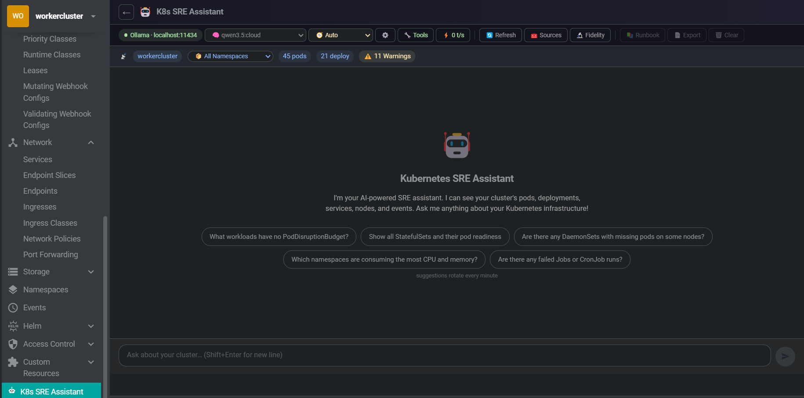

An AI-powered SRE assistant embedded directly in Freelens. It sees your live cluster state — pods, deployments, nodes, events — and adapts its answers to what you're actually asking. Powered by local Ollama. No data leaves your network.

Designed to work well on small (4–9B) models against real-world mid-size clusters.
Ask SRE questions in plain English. Responses stream in with full Markdown rendering — tables, code blocks, and lists render correctly even mid-stream. Session history persisted per cluster and namespace.
The model sees your cluster in real time via direct KubeApi.list() calls — not a stale cache. Pods, deployments, services, nodes, warning events, replica mismatches. Click Refresh to force a new scan.
All Ollama API calls use Node.js http/https — no browser mixed-content issues. Plain HTTP remote Ollama instances work reliably. Cloud-compatible endpoints configurable via Preferences.
The assistant drills into specific resources on demand during a conversation. Every tool call shows an Approve / Deny card — colour-coded by sensitivity. You stay in control of what the model is allowed to inspect.
ChunkManager → BM25 Retriever → SummaryManager → ContextBuilder. Only the 15 most query-relevant pods/deployments are injected per message, plus all anomalous resources — so even large clusters fit small models.
Every query is classified as write, investigate, explain, or general. Response structure adapts: full Evidence → Correlation → Hypotheses for investigations, direct manifest for YAML requests, clean prose for explanations.
Dependency diagrams render as native Canvas — zero npm dependencies, no renderer crashes. K8s colour-coded nodes, bezier edges, BFS layout. Expand to full screen or download as PNG.
Robot-icon button injected into every workload's toolbar, context menu, and detail drawer. Clicking opens a 640 px floating side panel with an analysis already running — no page navigation, no typing needed.
Example queries across the six SRE domains it understands natively.
| Category | Example queries |
|---|---|
| Cluster health | "What's the overall health of my cluster?" · "Are there any pods in CrashLoopBackOff?" |
| Troubleshooting | "Why is my deployment not rolling out?" · "Help me debug this crashing pod" |
| YAML authoring | "Write a simple nginx deployment" · "Add a liveness probe to this deployment" |
| Optimization | "Are there pods without resource limits?" · "Suggest HPA configs for my deployments" |
| Security | "Check for pods running as root" · "Review my RBAC configuration" |
| Operations | "How do I scale this deployment?" · "Generate a NetworkPolicy for namespace isolation" |
Every query is classified automatically. The correlated signals block (warning events, crash pods, replica mismatches) is injected only for investigative queries — skipped entirely for write, explain, and general.
| Intent | Triggered by | Response format |
|---|---|---|
| write | "write a deployment", "give me a YAML", "create a…" | Direct manifest + one-line RISK rating + verification step |
| investigate | "why is…", "debug…", "crashloop", "not working" | Evidence → Correlation → Hypotheses → Checks → Actions |
| explain | "what is…", "how does…", "explain…" | Clean prose explanation |
| general | Everything else | Concise direct answer |
The assistant inspects cluster resources on-demand during a conversation. All tools require explicit Approve / Deny before execution. Each tool can be individually toggled in Preferences.
get_namespace_detail
Full pod / deployment / service list for a specific namespace
get_pod_detail
Container states, restart counts, exit codes, termination reasons
get_resource_events
Recent warning events for any named K8s resource
get_deployment_detail
Replica status and pod states for a deployment
get_nodes
All cluster nodes with Ready / NotReady status
get_resource_chain
Full upstream / downstream graph: owner controller, PVCs, missing Secrets/ConfigMaps, HPA, Ingress chain
list_resources
Full inventory of any resource kind: pods, deployments, services, nodes, secrets, configmaps, ingresses, statefulsets, daemonsets, jobs, cronjobs, pvcs
get_pod_logs
Last 30 log lines (signal-filtered). Gated behind a dedicated approval requiring the model to state its rationale first.
get_container_logs
Container-specific log access with auto-resolved container name from context.
Override intent auto-detection to lock the model into a specific analytical frame.
| Mode | Behaviour |
|---|---|
| Auto | Intent detected from query text — recommended for general use |
| Troubleshoot | Always full investigation format: Evidence → Correlation → Hypotheses → Checks → Actions |
| Security | RBAC, PodSecurity, NetworkPolicy, image vulnerabilities, secret exposure risks |
| Cost | Waste reduction, right-sizing recommendations, autoscaling configuration |
| Capacity | Saturation signals, scheduling pressure, scaling strategy, resource headroom |
| YAML | Direct manifest output — no analysis preamble, no investigation sections |
Context pipeline designed to avoid "lost-in-the-middle" failures on small models. Non-blocking summarisation adds zero latency — compression runs after the response is delivered.
| v0.1.0 | v0.2.0+ | |
|---|---|---|
| System prompt cluster section (180 pods) | ~6,500 tokens | ~1,000 tokens |
| Reduction | — | ~85% |
| Pods injected per message | All | 15 most relevant + all anomalies |
| History compression | None | After 20 pairs → background summary |
| Added latency from compression | — | Zero (post-response) |
| Anomaly sorting | None | CrashLoop / OOMKilled / NotReady floated to top |
curl -fsSL https://ollama.com/install.sh | sh
ollama serveollama pull qwen2.5:7b # recommended — strong tool-calling and structured output
ollama pull gemma3:9b # excellent reasoning on large, complex clusters
ollama pull mistral # solid all-rounderModels smaller than 4B parameters are not reliably supported. Tool-calling and multi-step reasoning require sufficient model capacity.
git clone https://github.com/b-iurea/freelens-ollama-extension.git
cd freelens-ollama-extension
pnpm install && pnpm build && pnpm packOpen Freelens → Extensions → Add Local Extension → select the generated .tgz file.
The K8s SRE Assistant entry will appear in the left cluster sidebar. Click it to open the chat, or use the robot icon on any workload to run an instant diagnosis.